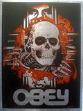
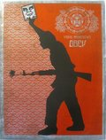
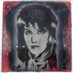
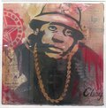
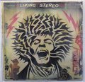
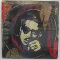
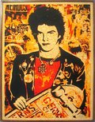
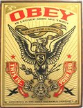
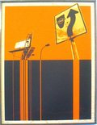

Visual Disobedience (Ox-Op Gallery)
From The Giant: The Definitive Obey Giant Site
{kind=link}
"Visual Disobedience" was a Shepard Fairey show at the OX-OP Gallery in Minneapolis, MN, that ran from September 3rd – October 4th, 2005.
From OX-OP Gallery:
OX-OP ARTS PRESENTS:
OBEY - SHEPARD FAIREY
VISUAL DISOBEDIENCE
Artist Reception Sat. SEPT. 3RD, 7pm – 10pm
Show runs SEPT. 3rd – OCT. 4th
Internationally recognized and worshipped by many, Shepard Fairey (OBEY/GIANT) returns to OX-OP on September 3rd to host his version of “Visual Disobedience.” Since his last appearance at OX-OP in 2003, he has become ever more in demand, as he and his OBEY propaganda/fine art march ceaselessly toward complete global domination.
Shepard Fairey knows a thing or two about influencing culture. His omnipresent “Andre the Giant” streetcampaign has long been haunting consumer culture. An astute student in the arts of persuasion, Fairey began his epic satire back in 1989, while still a student at The Rhode Island School of Design. Since then, his propaganda has been proliferated through stickers, clothing, skateboards, posters, stencil based graffiti, and even a documentary film, to spread over the United States and the unsuspecting world at large.
Fairey’s ideas have sparked an entire new movement in the art community, taking it from galleries to the street, and often back into galleries and even museums. Shepard has shown his work in solo gallery exhibitions all over the U.S., as well as in Japan, the U.K., Sweden, France, Belgium, Denmark, and Australia. Shepard has permanent collections on display in numerous museums, including the New Museum of Design in New York, the MOCA San Diego, and the Victoria & Albert Museum in London. He has lectured at numerous art conferences and colleges, including his alma mater, the Rhode Island School of Design.
Rob McBroom
rob@ox-op.com
Tiff Larkin tiff@ox-op.com
612-259-0085
OX-OP
1111 Washington Ave S.
(Behind Grumpy’s Bar)
Minneapolis, MN 55415
Ph. 612-259-0085
www.ox-op.com
An article from Pulse of the Twin Cities:
Shepard Fairey: Visual Disobedience
by Natasha Walter
Ox-Op is currently exhibiting fine art by Shepard Fairey of the Obey campaign. The Obey campaign, which began by inundating cities across the country with the now infamous Andre the Giant stickers and wheat-pastes, “can be explained as an experiment in Phenomenology. The first aim of phenomenology is to reawaken a sense of wonder about one’s environment...” according to the Obey website.
In his smart designs, Fairey proves to be as visually savvy as he is intellectually astute. In a throwback to the days of Soviet propaganda, he uses reds and pattern work reminiscent of U.S.S.R. gear. Against this backdrop, the print on wood "Stay Up Girl” features a fifties-era young woman with a spray-paint can in one hand and an Obey bill in the other. Below her is the slogan “Think and create, paint and destroy,” a simple but piercing phrase. With this visually slick pull into the notorious days of communism, Fairey brings the viewer to the line between propaganda and screechy advertisements.
In “Visual Disobedience,” a print on metal, the silhouette of a man stands primed for action, a gun slung over his shoulder while an easily overlooked flower sticks out the barrel. In his hand he holds the signature Obey mug. This image is yet another example of graphic quality that delivers an immediate political punch. The picture doesn't rival the print’s appended “Visual Disobedience” slogan, but certainly complements it, gracefully carrying its weight. The words, like much of the text that appears in Fairey's work, seem aimed at cutting through the toxic exterior of media bombardment and getting to the imaginative qualities of life.
Fairey also creates large-scale prints on paper. These majestic portraits of rebels exhibit elaborate stencil and collage work. Ornate frames appropriately showcase such visionaries as Noam Chomsky, the famous linguist and activist; Bobby Seale, co-founder of the Black Panthers; and Joe Strummer, lyricist of the Clash. With such iconic representations Fairey seems to be saying that men like these should be our heroic figures, rather than the Hollywood celebrities or founding fathers we worship in this country.
Judging by the presence of all the Obey paraphernalia in Minneapolis (there is even an image entitled “Minneapolis Stay Up”), Faiery’s campaign is a radical success. For me it represents an encounter with an inner force that is paradoxically consoled by the lack of an agency that seeks to regain power through consumerism. To discover your own insight, drop in—more than once—to Ox-Op for a close-up encounter with visual disobedience.
Works from "Visual Disobedience":
|  |  |
{kind=link}
{kind=link}
{kind=link}
{kind=link}
|  |  |  |  |
{kind=link}
{kind=link}
{kind=link}
{kind=link}
 |
 |  |  |
{kind=link}
{kind=link}
{kind=link}
{kind=link}
{kind=link}
{kind=link}
{kind=link}
References:
| Ox-Op Gallery | Pulse of the Twin Cities | MNartist.org |